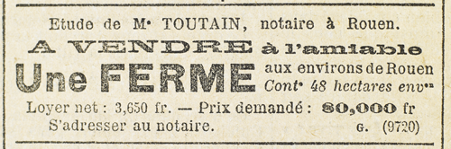

Il s’était levé de nouveau. Raoul se dressa devant lui, et, les yeux dans les yeux, tenace, autoritaire, il articula :
– Une preuve… Sinon, c’est la mort, n’est-ce pas ?
– Oui.
– Voici ma réponse. Les sept anneaux, tout de suite. Sans quoi…
– Sans quoi ?
– Mon ami remet à la police la lettre que vous avez écrite au baron d’Étigues pour lui indiquer le moyen de s’emparer de Joséphine Balsamo, et pour le contraindre à l’assassinat.
Beaumagnan joua la surprise.
– Une lettre ? Des conseils d’assassinat ?
– Oui, précisa Raoul… une lettre en quelque sorte déguisée, et dont il suffisait de négliger les phrases inutiles.
Beaumagnan éclata de rire.
– Ah ! oui, je sais… je me rappelle… un griffonnage…
– Un griffonnage qui constitue contre vous la preuve irrécusable que vous réclamiez.
– En effet…, en effet, je l’avoue, dit Beaumagnan, toujours ironique. Seulement je ne suis pas un collégien, et je prends mes précautions. Or cette lettre me fut rendue par le baron d’Étigues dès le début de la réunion.
– La copie vous fut rendue, mais j’ai gardé l’original que j’ai trouvé dans une rainure du bureau à cylindre dont se sert le baron. C’est cet original que mon ami remettra à la police.
Le cercle formé autour de Raoul se desserra. Les visages féroces des deux cousins n’avaient plus d’autre expression que celle de la peur et de l’angoisse. Raoul pensa que le duel était fini, et fini sans qu’il y eût réellement combat. Quelques froissements d’épée, quelques feintes. Pas de corps à corps. L’affaire avait été si bien menée, il avait par des manœuvres adroites si bien acculé Beaumagnan à une situation si tragique que, dans l’état d’esprit où il se trouvait, Beaumagnan ne pouvait plus juger sainement les choses et discerner les points faibles de l’adversaire.
Car enfin, cette lettre, Raoul affirmait bien qu’il en possédait l’original. Mais sur quoi s’appuyait-il pour l’affirmer ? Sur rien. De sorte que Beaumagnan qui exigeait une preuve irréfutable et palpable avant de céder, tout à coup, par une anomalie singulière, mais à quoi les manœuvres de Raoul avaient abouti, se contentait de l’unique affirmation de Raoul.
De fait, il lâcha pied brusquement, sans marchandage et sans tergiversation. Il ouvrit le tiroir, prit les sept anneaux, et dit simplement :
– Qui m’assure que vous ne vous servirez plus de cette lettre contre nous ?
– Vous avez ma parole, monsieur, et d’ailleurs, entre nous, les circonstances ne se représentent jamais de la même façon. La prochaine fois, vous saurez prendre l’avantage.
– N’en doutez pas, monsieur, dit Beaumagnan avec une rage contenue.
Raoul saisit les anneaux d’une main fébrile. Chacun d’eux, en effet, portait à l’intérieur, un nom. Sur un bout de papier, rapidement, il inscrivit les sept noms d’abbayes :
Fécamp,
Saint-Wandrille,
Jumièges,
Valmont,
Cruchet-le-Valasse,
Montivilliers,
Saint-Georges-de-Boscherville.
Beaumagnan avait sonné, mais il retint le domestique dans le couloir, et s’approchant de Raoul :
– À tout hasard, une proposition… Vous connaissez nos efforts. Vous savez exactement où nous en sommes et que le but, en définitive, n’est pas éloigné.
– C’est mon avis, dit Raoul.
– Eh bien ! seriez-vous disposé – je parle sans ambages – à prendre place au milieu de nous ?
– Au même titre que vos amis ?
– Non. Au même titre que moi.
L’offre était loyale, Raoul le sentit et fut flatté de l’hommage qu’on lui rendait. Peut-être eût-il accepté s’il n’y avait pas eu Joséphine Balsamo. Mais tout accord était impossible entre elle et Beaumagnan.
– Je vous remercie, dit Raoul, mais pour des raisons particulières, je dois refuser.
– Donc, ennemi ?
– Non, monsieur, concurrent.
– Ennemi, insista Beaumagnan, et comme tel, exposé à…
– À être traité comme la comtesse de Cagliostro, interrompit Raoul.
– Vous l’avez dit, monsieur. Vous savez que la grandeur de notre but excuse les moyens que nous sommes parfois contraints d’adopter. Si ces moyens se retournent un jour ou l’autre contre vous, vous l’aurez voulu.
– Je l’aurai voulu.
Beaumagnan rappela le domestique.
– Reconduisez monsieur.
Raoul fit trois salutations profondes, et s’en alla le long du couloir, jusqu’à la porte au judas qui fut ouverte. Là il dit au vieux serviteur :
– Une seconde, mon ami, veuillez m’attendre.
Il revint alors vivement vers le bureau où les trois hommes conféraient, et, se plantant sur le seuil, le bouton de la serrure dans la main, sa retraite assurée, il leur jeta d’une voix aimable :
– À propos de cette fameuse lettre si compromettante je dois vous faire un aveu qui vous donnera toute tranquillité, c’est que je n’en ai jamais pris copie, et, par conséquent, que mon ami n’en peut pas posséder l’original. Du reste ne croyez-vous pas que toute cette histoire d’ami qui se promène aux environs de la Préfecture, et qui guette les trois quarts de quatre heures est bien invraisemblable ? Dormez en paix, messieurs, et au plaisir de vous revoir.
Il ferma la porte au nez de Beaumagnan et gagna la sortie avant que celui-ci eût le temps d’avertir son domestique.
La seconde bataille était gagnée.
Au bout de la rue, Joséphine Balsamo qui l’avait conduit chez Beaumagnan, attendait, la tête penchée hors de la portière d’un fiacre.
– Cocher, dit Raoul, gare Saint-Lazare, au départ des grandes lignes.
Il sauta dans la voiture et s’écria aussitôt, tout frissonnant de joie, l’intonation conquérante :
– Tiens, chérie, voilà les sept noms indispensables. Voici la liste. Prends-la.
– Alors ? dit-elle.
– Alors, ça y est. Deuxième victoire en un jour, et quelle victoire, celle-là ! Mon Dieu ! que c’est facile de rouler les gens ! Un peu d’audace, des idées claires, de la logique, la volonté absolue de filer comme une flèche vers le but. Et les obstacles s’abolissent d’eux-mêmes. Beaumagnan est un malin, n’est-ce pas ? Eh bien ! il a flanché comme toi, ma bonne Josine. Hein ? ton élève te fait-il honneur ? Deux maîtres de première classe, Beaumagnan et la fille de Cagliostro, écrasés, pulvérisés par un collégien !
« Qu’en dis-tu, Joséphine ?
Il s’interrompit :
– Tu ne m’en veux pas, chérie, de parler ainsi ?
– Mais non, mais non, dit-elle en souriant.
– Tu n’es plus vexée pour l’histoire de tout à l’heure ?
– Ah ! fit-elle, ne m’en demande pas trop ! Vois-tu, il ne faut pas me blesser dans mon orgueil. J’en ai beaucoup et je suis rancunière. Mais, avec toi, on ne peut pas t’en vouloir bien longtemps. Tu as quelque chose de spécial qui désarme.
– Beaumagnan n’est pas désarmé, lui, fichtre, non !
– Beaumagnan est un homme.
– Eh bien ! je ferai la guerre aux hommes ! Et je crois vraiment que je suis fait pour cela, Josine ! oui, pour l’aventure, pour la conquête, pour l’extraordinaire et le fabuleux. Je sens qu’il n’est point de situation d’où je ne puisse sortir à mon avantage. Alors, n’est-ce pas, Josine, c’est tentant de lutter quand on est sûr de vaincre ?
Par les rues étroites de la rive gauche, la voiture courait bon train. On franchit la Seine.
– Et je vaincrai, Josine, dès aujourd’hui. J’ai tous les atouts en mains. Dans quelques heures, je débarque à Lillebonne. Je déniche la veuve Rousselin, et, qu’elle veuille ou non, j’examine le coffret en bois des Îles, sur lequel est gravé le mot de l’énigme. Et ça y est ! Avec ce mot-là, et avec le nom de sept abbayes, c’est bien le diable si je ne décroche pas la timbale !
Josine riait de son enthousiasme. Il exultait. Il racontait son duel avec Beaumagnan. Il embrassait la jeune femme, faisait des pieds de nez aux passants, ouvrait la glace, insultait le cocher dont le cheval trottait « comme une limace ».
– Au galop donc, vieux bougre ! Comment ! tu as l’honneur de traîner dans ton char le dieu de la Fortune et la reine de la Beauté, et ton coursier ne galope pas !
La voiture suivait l’avenue de l’Opéra. Elle coupa par la rue des Petits-Champs et la rue des Capucines. Dans la rue Caumartin le cheval prit le galop.
– Parfait ! cria Raoul. Cinq heures moins douze. Nous arriverons. Bien entendu, tu m’accompagnes à Lillebonne ?
– Pourquoi ? C’est inutile. Que l’un de nous deux y aille, c’est suffisant.